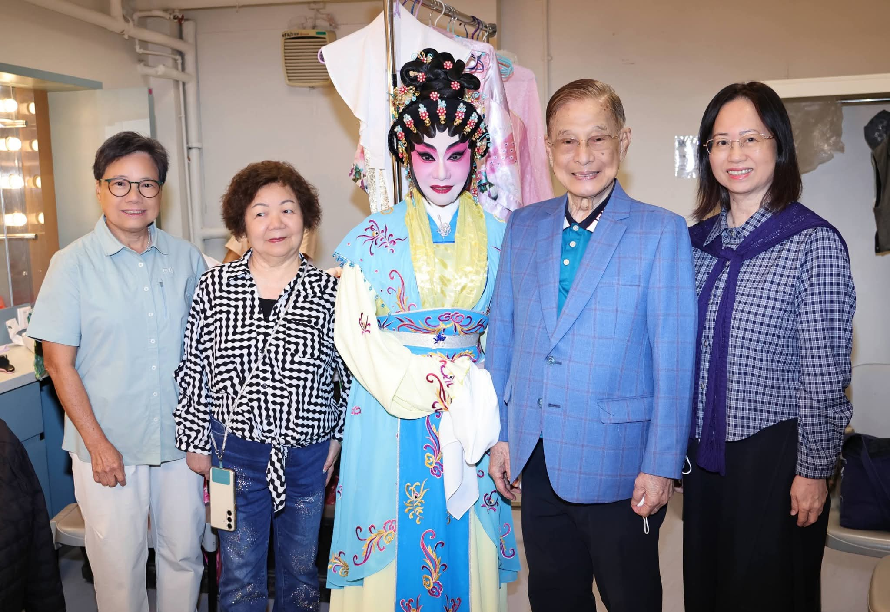
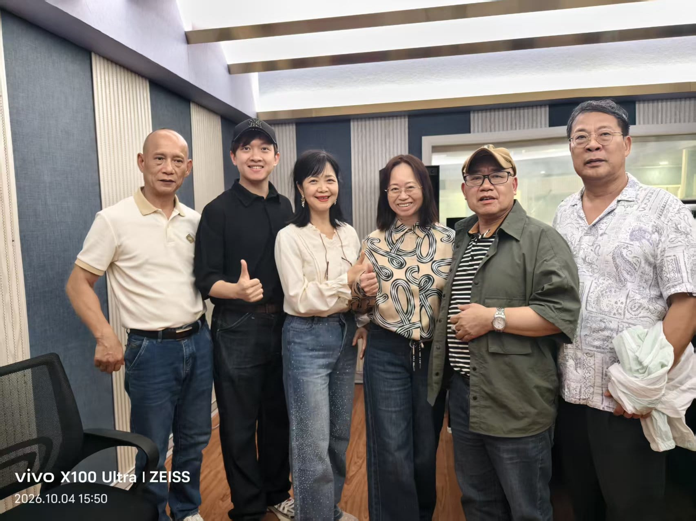
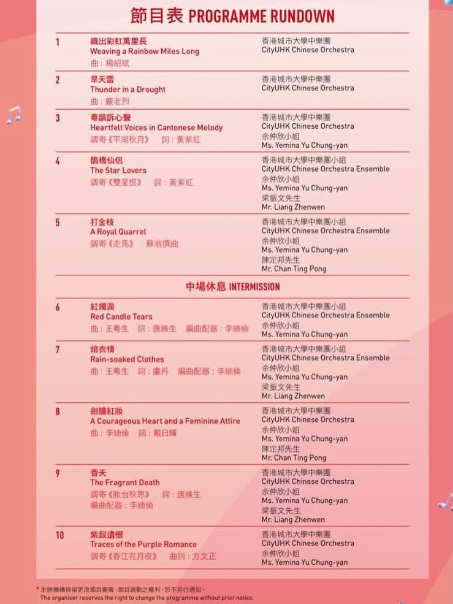
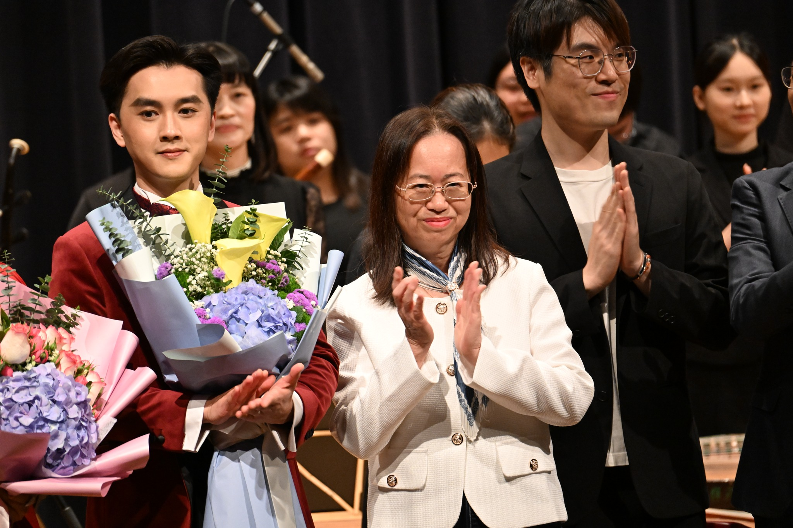
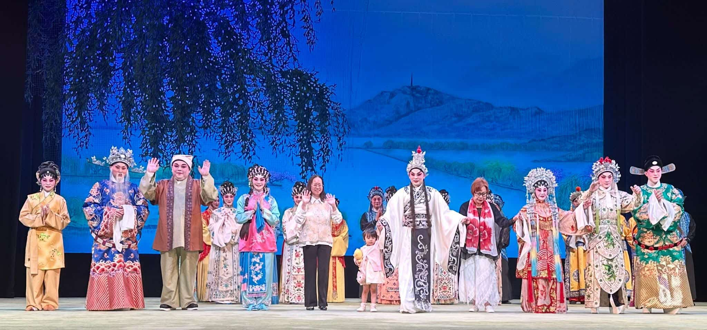
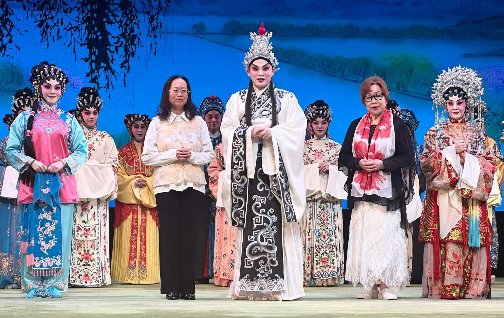
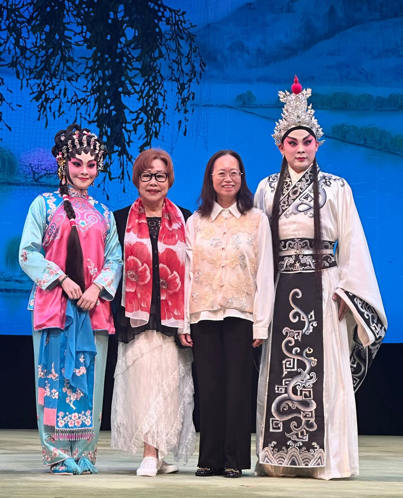
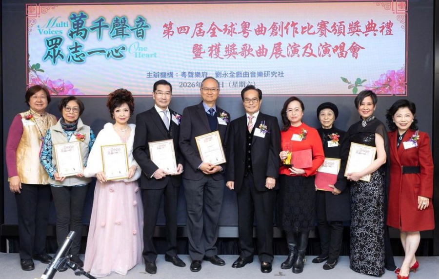
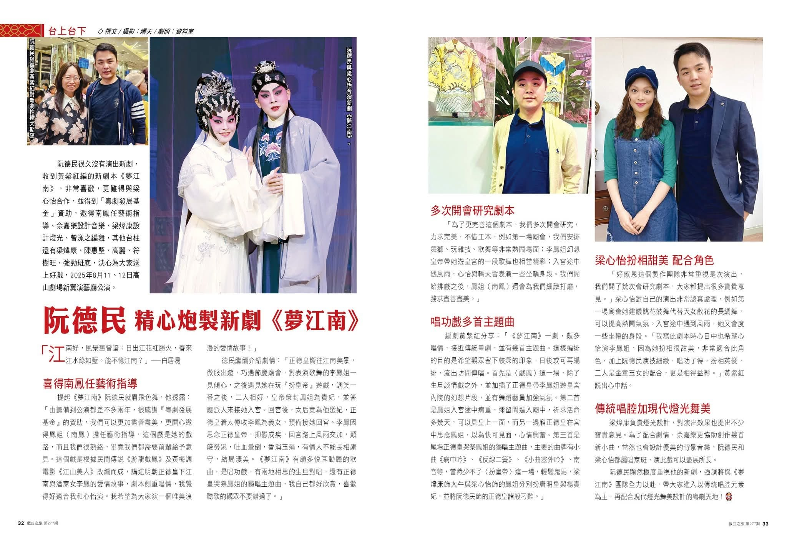
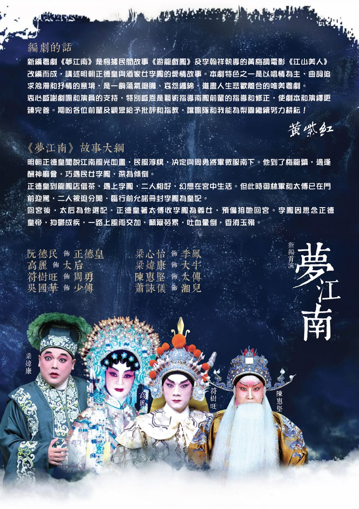

萬紫千紅·戲曲結緣
筆耕不倦 粤曲粤劇新作分享
各位粵曲同好大家好，我是黃紫紅。歡迎蒞臨我的個人網站。我的最新作品可以在影音集觀看，亦歡迎各位到曲譜分享下載拙作曲譜，謝謝支持。
最後更新於：2026年10月
最新消息
2026年10月16日與朱慶祥老師及莊婉仙攝於高山劇場後台。

新曲《烏衣巷口夕陽斜》於本月4日在廣州的廣東音像錄音，歡迎下載曲譜及收聽。

新曲《幸有東君憐飛絮》在2026年6月7日於荃灣大會堂首唱。此曲根據粵劇《琵琶山上英雄血》而撰寫，由陳彩蓮及莫華敏主唱。
《琵琵淚》折子戲於2026年4月5日在沙田大會堂演出。
《還君一點相思淚》工尺譜已上傳至本網站，可到曲譜分享下載。
2026年1月1日，梁振文，芯融將會在高山劇場演唱《琵琶淚》。
新曲《江畔奇緣》將於2026年1月3日在博藝會發佈。（芯融，羅姸演唱）
最新節目：新曲《鎖麟囊之人海奇逢》於2025年11月11日（二）於戲曲中心首唱。
新作《粵韻訴心聲》及《鵲橋仙侶》對唱版於2025年11月6日（四）於香港城市大學學生藝術節由余仲欣出演。


2025年9月1日高山劇場，羅妍芯融拍得響演唱會，新曲首唱《蝶影聚散倆依依》
感謝大家支持，《夢江南》在2025年8月12日已於高山劇場新翼演藝廳圓滿落幕。我收集了很多寶貴的意見，日後若有機會演出，定必細心琢磨，使劇本更臻善美。
承蒙支持，新作《夢江南》2025年8月11日於高山劇場首演完成，第二場8月12日繼續演出。



新作《胡不歸之惜別妻房》獲「萬千聲音眾志一心」第四屆全球粵曲創作比賽金獎。

傳媒速遞：《夢江南》獲《戲曲之旅》報導（全文連結）


2025年8月11-12日高山劇場，新編首演《夢江南》（阮德民好友匯Facebook Reels）

2025年4月23日受「石頭文化傳播」訪問